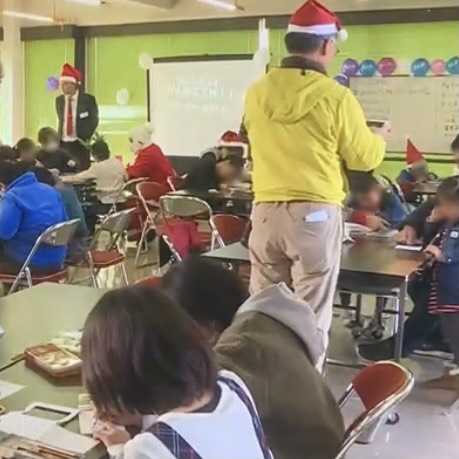

2020/02/24
裏クリスマス
未熟者の白サンタは、赤サンタになるための試験を受ける！
白サンタに課せられた試験は、
色んな方法で色んな人と心を通じ合わせること。
集まってくれた子ども達と楽しく試験を乗り越えてゆく！

未熟者の白サンタは、赤サンタになるための試験を受ける！
白サンタに課せられた試験は、
色んな方法で色んな人と心を通じ合わせること。
集まってくれた子ども達と楽しく試験を乗り越えてゆく！
「ひとり親家庭」の支援を目的とした活動。
鳥取県の助成金を活用し、計40食のお弁当を無料配布しました。
地元のとんかつ専門店「とん吉」をはじめ、
たくさんの地元企業に協賛をいただきました。
味の旅と称して県外グルメに着目しオリジナル弁当を販売しました。
コロナ禍において、県外への移動が難しかった中、旅行気分を味わう企画。
九州の大分県から「とり天」、福岡県から「ごぼ天」等をとり入れ、
前回の子ども食堂を上回る100食以上を完売しました。
クリスマスに向けてのイルミネーション飾りつけ企画。
湯梨浜町の特産品である梨の
果実袋をLEDに被せて「光の実」を作りました！
袋には子どもたちの思い思いのイラストやメッセージなど！
保護者からあらかじめプレゼントを受け取り
イブの夜に、スタッフがサンタになりきってお宅に登場！
プレゼントは物だけじゃなく思い出も。
クリスマスを特別に彩る大好評企画。